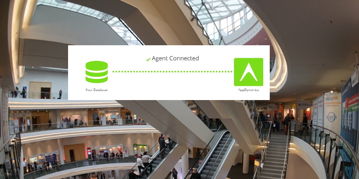
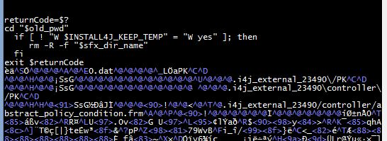
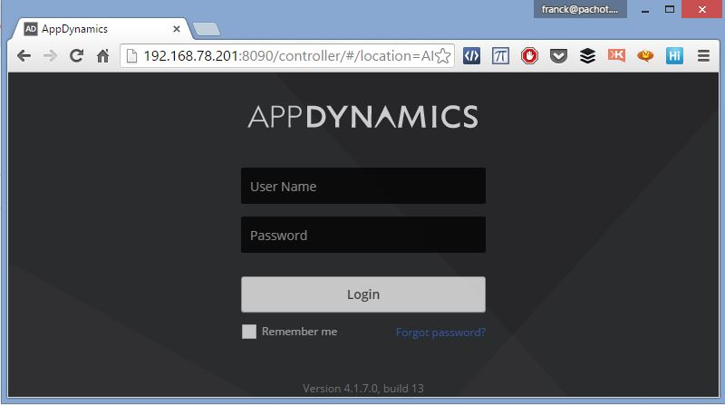
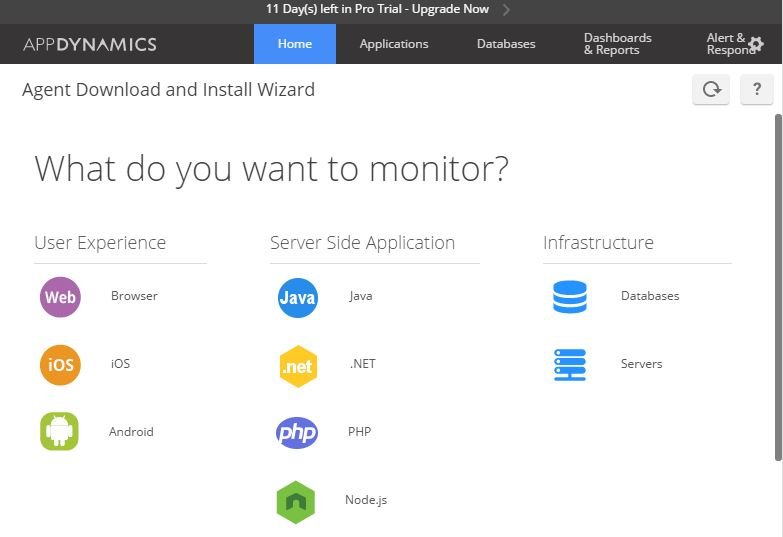
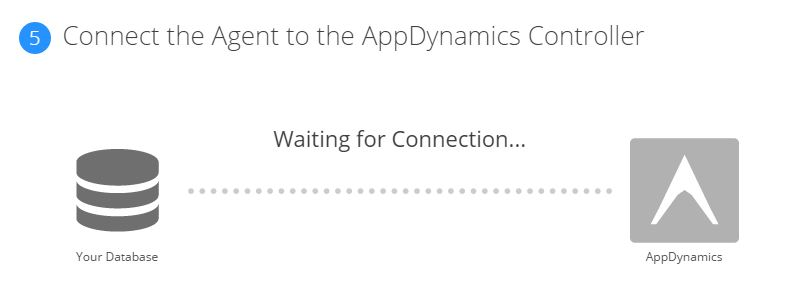
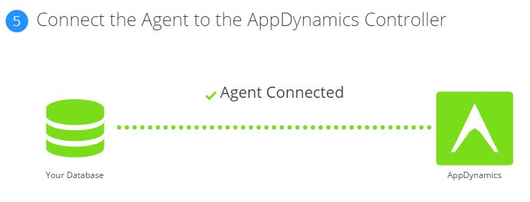

I like to come upon new monitoring software that help to go quickly from user response time to root cause. And I love applications that can be installed easily and at which I can give a try without reading pages of manual.
At DOAG 3rd floor I’ve visited the AppDynamics booth and immediately wanted to install the trial version and give it a try. 
From the AppDynamics website, there is a 15 days trial version that you can download. I’ve downloaded the Linux version (controller_64bit_linux-4.1.7.0.zip) because I want to try it on our Oracle Tuning workshop VM. It’s 500MB and when you unzip you get two files:
oracle@vmoratun201:/tmp/appdynamics/ [DB1] unzip controller_64bit_linux-4.1.7.0.zip Archive: controller_64bit_linux-4.1.7.0.zip inflating: controller_64bit_linux-4.1.7.0.sh inflating: license.lic oracle@vmoratun201:/tmp/appdynamics/ [DB1] ls -l total 1084416 -rw-r--r--. 1 oracle oinstall 559790650 Nov 20 21:33 controller_64bit_linux-4.1.7.0.sh -rw-r--r--. 1 oracle oinstall 550634894 Nov 23 20:35 controller_64bit_linux-4.1.7.0.zip -rw-r--r--. 1 oracle oinstall 1997 Nov 22 12:43 license.licYes… a 500MB ‘.sh’ to run as a shell script. If you look at it, it embeds some binary code at the end of the script.  Funny isn’t it? I like this idea…
Then just run it
oracle@vmoratun201:/tmp/appdynamics/ [DB1] sh controller_64bit_linux-4.1.7.0.sh Unpacking JRE ... Preparing JRE ... Starting Installer ...You have a graphical wizard and after a few next-next-next you can connect to the server with a browser: 
Then it’s very easy. Look at what you can monitor:
 And I choose ‘database’.
I have to set database type (Oracle) and the url of my controller.
The wizard ask you download the database agent (dbagent-4.1.7.0.zip). I just get the url from there and download it in my VM with wget:
oracle@vmoratun201:/tmp/appdynamics/ [DB1] wget https://download.appdynamics.com/self_service/agent/dbagent/2 --2015-11-23 21:30:12-- https://download.appdynamics.com/self_service/agent/dbagent/21cea4f9066d3131435bbf01 Resolving download.appdynamics.com... 54.244.244.230 Connecting to download.appdynamics.com|54.244.244.230|:443... connected. HTTP request sent, awaiting response... 200 OK Length: 39230821 (37M) [application/zip] Saving to: “dbagent-4.1.7.0.zip” 36% [=======================> ] 14,253,827 191K/s eta 2m 4sThen follow the instructions:
unzip dbagent-4.1.7.0.zip java -jar db-agent.jarThe agent knows where is the controller (probably from the download url) and connects to it once started. I am still in the wizard, waiting to receive that connection:  and a few minutes later: 
I really like those simple easy things… It tells you to wait 3 minutes and 3 minutes later you get it.
The wizard asks connection information to my database (host, port, service, user, password) and it’s ready to monitor:
Not very exiting yet? I’ve run SwingBench for few minutes. Let’s click on ‘Metrics Browser’ and choose some statistics to monitor:
And that’s only a small part of the product, after only one hour installing it and running it without reading any documentation. It can do lot more. I’m running SwingBench here and it’s Java. I can monitor Java, from main calls to JDBC calls, and match it with the database time.
This is the point: you drill down from the user response time through the profiling of the java methods, and when you are in a jdbc call, then you drill down to the database time. But that’s for future blog posts.
{kind=link}
{kind=link}
{kind=link}
{kind=link}
{kind=link}
{kind=link}
{kind=link}
{kind=link}